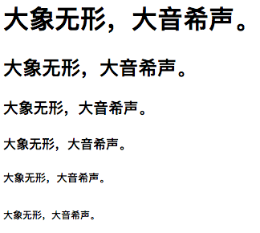

1、常用标签
- h标签
- p标签
- pre标签
- br标签
- em和i标签
- strong标签和b标签
- span标签
- sub和sup标签
- del和ins标签
- a标签
- 列表标签ul ol dl
1.1、h标签
h标签又叫标题标签，是从h1到h6的，分别代表标题从大到小，即h1是最大的标题标签，依次减小。显示效果如下所示：1
2
3
4
5
6<h1>大象无形，大音希声。</h1>
<h2>大象无形，大音希声。</h2>
<h3>大象无形，大音希声。</h3>
<h4>大象无形，大音希声。</h4>
<h5>大象无形，大音希声。</h5>
<h6>大象无形，大音希声。</h6>## 1.2、p标签 p标签又叫做段落标签，代表的是一个完整的段落，当然这个标签可不仅仅只是用来代表段落的，同样也可以作为其他标签的容器来使用。h标签的数量有且仅有6个，并且一般情况下h标签在页面中只会允许出现一次
## 1.3、pre标签 pre标签是特殊的段落标签，它可以解析空格，比如下面这样的代码，要原样在html中展示1
<p>p代表的段落标签是独占一行</p>
如上所示内容区域能够按照我们想要的排布来进行显示，一般情况下，主要用来显示代码区域等。 ## 1.4、br换行标签 br标签主要是用来进行换行操作的，是一个单标签。1
2
3
4
5<pre>
public void run(){
log.i(tag,"run function");
}
</pre>## 1.5、em和i标签，斜体字标签 em标签和i标签都是斜体字标签，可能是在显示上面没有区们，但是他们也有很大的区别1
大象无形<br>大音希声。
显示效果如下： 可以看到其实在显示上面并没有多少区别，但是他们也有几点区别：1
2<em>我是em</em><br>
<i>我是i</i><br>
<i>在创建之初就是简单 地表示粗体和斜体样式，但是到了HTML5，为了语义化特性，这两个标签也被赋予了语议，样式倒不那么重要，因为那是css的事情。但上面两组标签语义还是各有侧重。- i元素代表在普通文本中具有不同语态或语气的一段文本，某种程序上表明一段不同特性的文本，比如一个分类学名称，一个技术术语，一个外语习语，一个音译，一个想法或西本方文本中的一般船名
- em元素代表对其内容的强调。突出强调的位置会改变语句本身的意义。因此，元素构成内容的一个部分。且这种方式表示强调的程序依赖于是何种语言
- em不是一个普通的斜体标签。有时为了部分文本由于不同的语态或语气需有别于段落的其他部分，这是i标签更为合适。em标签不是为了表明重要性而是表示着强调。
1
2
3
4
5
6
7
8
9
10
11
12
13
14
15
16//分类学名称
<p>The <i class="taxonomy">Felis silvestris catus</i>is cute.</p>
//术语
<p>The term <i>prose content</i>is defined above.</p>
//外语习语
<p>There is a certain<i lang="fr">je ne sais quoi</i>in the air.</p>
//这是一句不带任何强调的句子
<p>Cats are cute animals.</p>
//em包围Cats，强调猫是种可爱的动物，而不是狗或者其他动物
<p><em>Cats</em> are cute animals.</p>
//em包围are，代表句子所说是事实，来反驳那些说猫不可爱的人
<p>Cats <em>are</em> cute animals.</p>
//em包围cute，强调猫是一种可爱的动物，而不是有人说的刻薄、讨厌的动物
<p>Cats are <em>cute</em> animals.</p>
//这里强调猫是动物而不是植物
<p>Cats are cute <em>animals</em>.</p>1.6、strong标签和b标签
<strong>元素可以被用在标题、说明或者段落上，来显示这部分被包围的文字的重要性。它代表内容的强烈的重要性、严重性或者紧急性<b>元素主要是为了突出显示关键词、产品名称等。
1.7、 span标签
span标签对应的是文本样式的分离标签：大概的意思就是，如果需要对文本样式中个别的样式进行单独定义的话，就可以使用如下的方法：
1 | 这是一个<span style="color:red;background:blue;">没有固定的格式表现，可对其应用样式</span> |
1 | <p>x<sub>1</sub><sup>2</sup>+y<sub>1</sub><sup>2</sup>=z<sub>1</sub><sup>2</sup></p> |
1 | 原价<del>￥998</del></br> |
1 | //链接到同一个页面不同的位置 |
- a标签是一个超链接标签，默认的a标签在鼠标指上去的时候会有一个手指效果
- a标签是一个行级元素标签
- a标签有自己的默认的标签样式
- 如果a标签中的href没有指向的话，一般情况下我们都默认它是值为＃
- 在href链接到外部网站的时候，需要补全
http://
1.11、 列表标签ul ol dl
1.11.1、无序列表的使用
无序列表是一个项目的列表，此列表项目默认使用粗体的原点来标记。无序列表始于ul标签，每个列表项始于li，也就是ul里面包含着每个列表项
1 | <ul> |
显示效如如下所示：
默认情况是，每个列表前面有一个默认的原点表示，这是默认的样式，可以进行修改为空心圆，方块符号，可以使用list-style-type或者直接用type属性来进行修改，一般情况下使用list-style-type来进行修改，因为属性集更为丰富。
1 | <ul type="circle"> |
1 | <ol> |
1 | <ol type="1"> |
1.11.3、自定义组合列表的使用
自定义列表dl不仅仅是一列项目，同样是项目及其注释的组合，定义列表以dl标签开始，每个定义列表项目以dt开始，每个定义列表项的定义以dd开始，注意：定义列表dl，定义列表项目dt，定义列表项目的定义dd
1 | <dl> |
1 | //简单的使用方式 |
1 |
|
关于外部样式、内部样式、行内样式的几点注意事项
- 优先级：外部样式<内部样式<行内样式，所以优先级别最高的其实是行内样式，如果定义了行内样式的话那么外部样式和内部样式就不生效
- rel属性规定当前文 档与被链接文档之间的关系
2.2、DIV盒子模型
首先想象一下生活中的盒子模型，一个盒子主要包括的是：外壳和内部空间，那么外壳主要又包括了外壳的厚度，外壳的上侧面、底侧面，那么同样在前端设置中的盒子也是一样。
div盒子元素框＝元素内容＋内边＋边框＋外边距
- 元素的内容：主要指的是元素最内部分所承载的实际内容（element）
- 边框：围绕元素的内容和内边距的一条或者多条线（boder）
- 内边距：元素内容和边框之间的空白区域（padding）
- 外边距：边框以外是外边距默认透明的，因此不会遮挡其后的任何元素（margin）
2.2.1、内边距padding
内边距padding是元素内容与边框之间的空白区域
主要有如下几个属性：
- padding-top：顶部内边距padding-top:30px
- padding-left：左侧内边距padding-left:30px
- padding-right：右侧内边距padding-right:30px
- padding-bottom：底部内边距padding-bottom:30px
以上的内边距属性是都单一侧面来展示的，但是同时内边距同样有自己的复合展示属性padding
1 | //padding:复合属性 |
2.2.2、外边距margin
边框margin以外的外边距默认透明的，因此不会遮挡其后的任何元素，margin主要有以下四个属性，类似于padding
- margin-top：顶部外边距margin-top:30px
- margin-left：左侧外边距margin-left:30px
- margin-right：右侧外边距margin-right:30px
- margin-bottom：底部外边距margin-bottom:30px
以上的内边距属性是都单一侧面来展示的，但是同时内边距同样有自己的复合展示属性padding
1 | //margin:复合属性 |
补充：使用margin:auto;可以让块级元素在父元素中居中显示
2.2.3、边框border
boder属性主要代表的是边框属性，也就是外边距和内边距的分界线部分。所以与内外边距一样，其是支持上下左右属性及以复合属性，主要分为以下四种：
- border-top：上边框border-top:1px solid red;
- border-right：右侧边框border-right:1px dotted red;
- border-bottom：底部边框border-bottom:1px dashed green;
- border-left：左侧边框border-left:1px solid blue;
border的其他属性：border-style
| 值 | 含义 |
|---|---|
| none | 没有边框样式 |
| solid | 实线边框 |
| dotted | 点状边框 |
| souble | 双实线边框 |
| dashed | 虚线边框 |
| border的其他属性：border-width |
| 值 | 含义 |
|---|---|
| border-width | 复合边框样式类型 |
| border-top-width | 顶部边框宽度 |
| border-left-width | 左侧边框宽度 |
| border-right-width | 右侧边框宽度 |
| border-bottom-width | 底部边框宽度 |
| border的其他属性：border-color |
| 值 | 含义 |
|---|---|
| border-color | 复合边框样式类型 |
| border-top-color | 顶部边颜色 |
| border-left-color | 左侧边框颜色 |
| border-right-color | 右侧边框颜色 |
| border-bottom-color | 底部边框颜色 |
| 当然关于以上的border-style border-width border-color一般情况下用的都比较少，因为border复合属性其实已经可以完成其功能了; | |
border:border-width border-style border-color; |
1 |
|
2.4、CSS选择器
2.4.1、初级选择器
- 通配符选择器
- 元素选择器
- ID选择器
- class类选择器
- 类选择器与ID选择器之间的区别
- 后代选择器
2.4.1.1、通配符选择器
*星号会匹配所有有的元素，针对所有的元素设置，使用方式如下所示：
1 | *{margin:0px;padding:0px} |
一般情况下，使用通配符的选择器的场景并不是很多，上面是我们清除浏览器默认样式的时候进行使用的。
2.4.1.2、元素选择器
元素选择器是指用标签名字来进行选择，如下使用方法：
1 | div{width:200px;height:200px;background:red;} |
2.4.1.3、ID选择器
ID选择器主要是指的是通过标签的ID进行标签的选择，首先要给标签赋予一个id
1 | <div id="main_div"></div> |
然后在css样式中，通过#ID的形式，来进行选择，如：
1 | #main_div{width:100px;height:100px;} |
ID选择器在与js结合的时候，会使用的比较多
2.4.1.4、class类选择器
类选择器的使用方式类似ID选择器，首先要给标签一个指定的类，然后通过.点操作符来进行类名的选择如：
1 | <div class="main"></div> |
然后在style样式中去进行类的选择
1 | .main{width:100px;height:100px;} |
类选择器一般情况下在样式实现的时候会比较多，主要是因为html标准支持一个标签可以拥有多个类，但是不支持多个ID
2.4.1.5、类选择器与ID选择器之间的区别
- ID选择器必须是唯一的不能有同名的ID存在，只能够使用一次，同名的class类选择器可以多次使用，也就是可以定义一个类来实现一个样式复用，但是ID选择器则不行。
- 关于权重（优先级），ID选择器的优先级会大于class类选择器，如果一个标签既有ID选择器也有class选择器，那么这个时候会优先ID选择器进行选择。
2.4.1.6、后代选择器
后代选择器，就是一个父级标签下面的所有后代，既可以包括这个标签的子集后代，也可包含这个子集后代的后代，即选择这个标签下所有指定元素。后代选择器，先去选择div然后选择div下面的ul然后再次选择ul下面的li1
2
3
4
5
6
7
8
9
10<div>
<ul>
<li>
第一个li元素
</li>
<li>
第二个li元素
</li>
</ul>
</div>1
div ul li{width:100px;height:100px;backgroud:blue;}
2.4.1.7、选择器实例
1 |
|
显示效果如下：
3、HTML5
3.1、html文件的声明
1 |
在html标签内部主要分为两个部分，一个是head头部部分，一个是body体部
1 | <html> |
头部部分主要是一些对一引些必要属性的声明，或者样式的设计，以及CSS或者JS等链接。体部部分主要包括页面的一些布局，或者样式等设置，JS等引用等也可以在体部做引用声明。在head标签中必须要声明语言类型，一般为lang = "en"
1 | <head lang="en"> |
头部文件中包含的必要的一些属性和对应的值。meta标签，元素可提供相关页面的元信息（meta-information）
| 属性 | 值 | 描述 |
|---|---|---|
| http-equiv | content-type expires refresh set-cookie |
把content属性关联到HTTP的头部 |
| name | author(html的定义作者) description(html文档主要的描述) keywords(关链字) generator(编辑器的名称) revised(网页文档的修改时间) others |
把content属性关联到一个名称 |
| scheme | some_text | 定义用于翻译content属性值的格式 |
1 | <meta name="author" content="****" /> |
link标签是用来进行外部链接使用的
| 属性 | 值 | 描述 |
|---|---|---|
| href | url | 规定被链接的文档的位置 |
| hreflang | language-code | 规定被链接的文档中的文本语言 |
| media | media-query | 规定被链接文档被显示在什么设备上 |
| ref | alternate author help icon licence next pingback stylesheet tag search prev |
规定当前文档与被链接文档之间的关系 |
| sizes | 尺寸 | 规定被链接资源的尺寸，仅仅试用与rel=”icon” |
| type | MIME_TYPE | 规定被链接文档的MIME类型 |
1 | <link rel="stylesheet" href="" /> |
script标签：引入js文件
1 | <script src="***.js"></script> |
title标签：用来定义文档的名称
1 | <title>html网页名称</title> |
举例如下：
1 |
|
3.2、行内元素与块级元素
行内元素（display:inline）：只是占据它内容所占的位置，默认是内容撑开高度，其他的内容的显示是在行级元素的后面进行的。行级元素是不能设置宽高的，默认是内容撑开的高度。
块级元素（display:block）：块级元素是会独占一行的位置，它后面的元素是会换行进行显示的，并且块级元素如果不给宽高，默认宽度是父级元素宽度的100%，高度则是内容撑开的高度的。
3.2.1、行内元素与块级元素区别
- 块级元素会占一行显示，但是行内元素可以在一行并排的显示
- 行内元素对以下属性的特殊化效果
- 设置宽度width无效
- 设置高度height无效
- 设置margin外边距的时候，默认只会支持左右，上下设置无效，并且auto也是无效的
- 设置padding内边距的时候，默认左右有效，上下是无效
3.2.2、行内元素与块级元素之间转换
我们可以通过样式属性的设置，来控制标签的样式显示，即去改变标签的行块级的特性。主要有以下四种：
- display:none：不显示，包括其子元素都会被隐藏起来，彻彻底底消失
- display:block：将行内元素转换成块级元素，有块级的宽高，独占一行，padding,margin等设置特性。
- display:inline：将块级元素转换成行内元素，这个时候具有行内元素的特性，可以横排显示灯
- display:inline-block：以行内元素形式进行排列，以块级元素的样式进行显示，有块级元素的所有特性，但是支持行内的横排显示，一般使用会多一些。
1
2
3
4
5
6
7
8
9
10
11
12
13
14
15
16
17
18
19
20
21
22
23
24
25
26
27
28
29
30
31
32
33
34
35
36
37
38
39
40
41
42
43
44
45
46
47
48
49
50
51
52
53
54
55
56
57
<html lang="en">
<head>
<meta charset="UTF-8">
<title>行块级元素的转换</title>
<style type="text/css">
.main{
width:1200px;
margin:10px auto;
border 1px solid blcak;
}
p{
height:100px;
width:100px;
background-color:#00aa00
border:1px solid red;
}
.main .display_none_demo{
display:none;
}
.main .display_inline_demo p{
display: inline;
}
.main .display_block_demo span{
display:block;
width:100px;
height:100px;
border:1px solid red;
background-color: #84a3e3
}
.main .display_inline_block_demo p{
display: inline-block;
}
</style>
</head>
<body>
<div class="main">
<div class="display_none_demo">
<p>第一个块级元素p</p>
<p>第二个块级素p</p>
</div>
<div class="display_inline_demo">
<p>第三个块级元素p</p>
<p>第四个块级元素p</p>
</div>
<div class="display_block_demo">
<span>第一个span标签</span>
<span>第二个span标签</span>
</div>
<div class="display_inline_block_demo">
<p>第5个p标签</p>
<span>第三个span标签</span>
<p>第6个p标签</p>
</div>
</div>
</body>
</html>